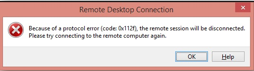
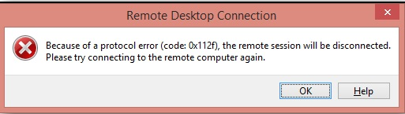

Symptom
When you log in to a Windows ECS, the system displays error code 0x112f.
Figure 1 Error message (code: 0x112f)


Possible Causes
The ECS memory is insufficient.
Solution
- Method 1 (recommended)
Modify the ECS specifications to increase the vCPUs and memory size. For instructions about how to modify ECS specifications, see General Operations for Modifying Specifications.
- Method 2
Enable virtual memory on the ECS to obtain its idle memory.
For instructions about how to enable virtual memory, see How Can I Enable Virtual Memory on a Windows ECS?

This method will deteriorate the disk I/O performance. Therefore, use this method only when necessary.